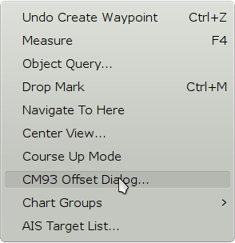
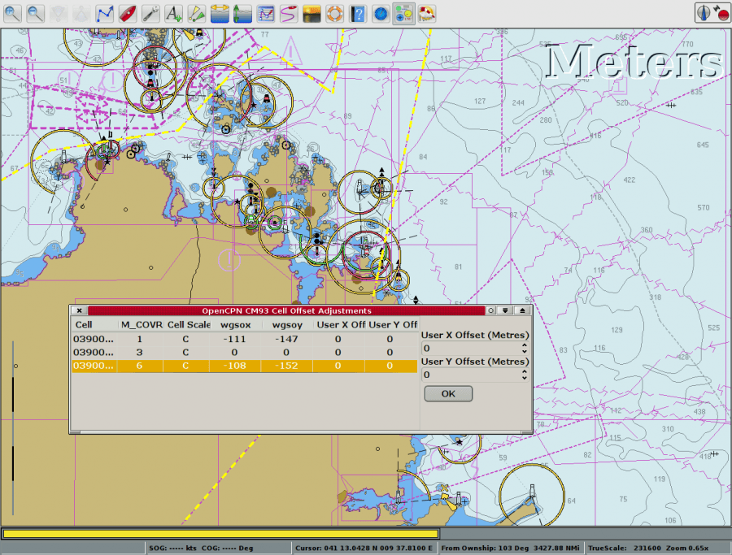
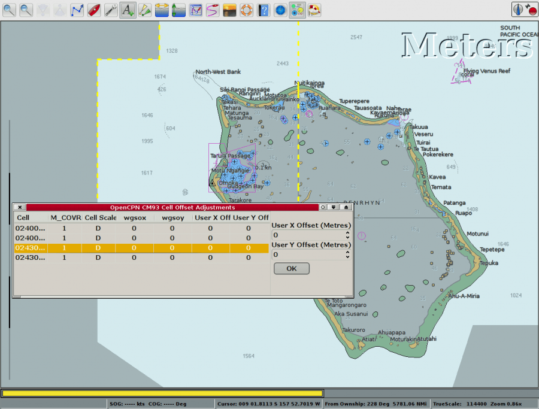
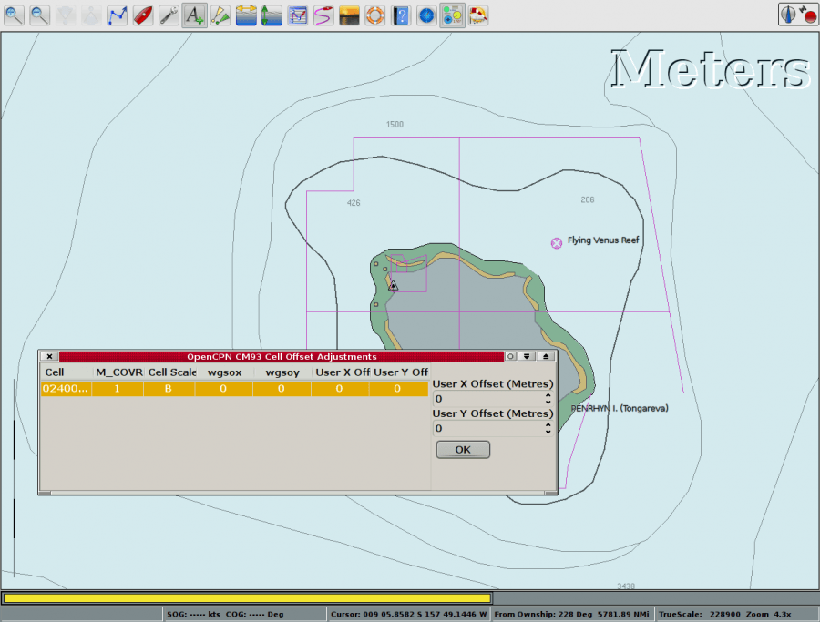
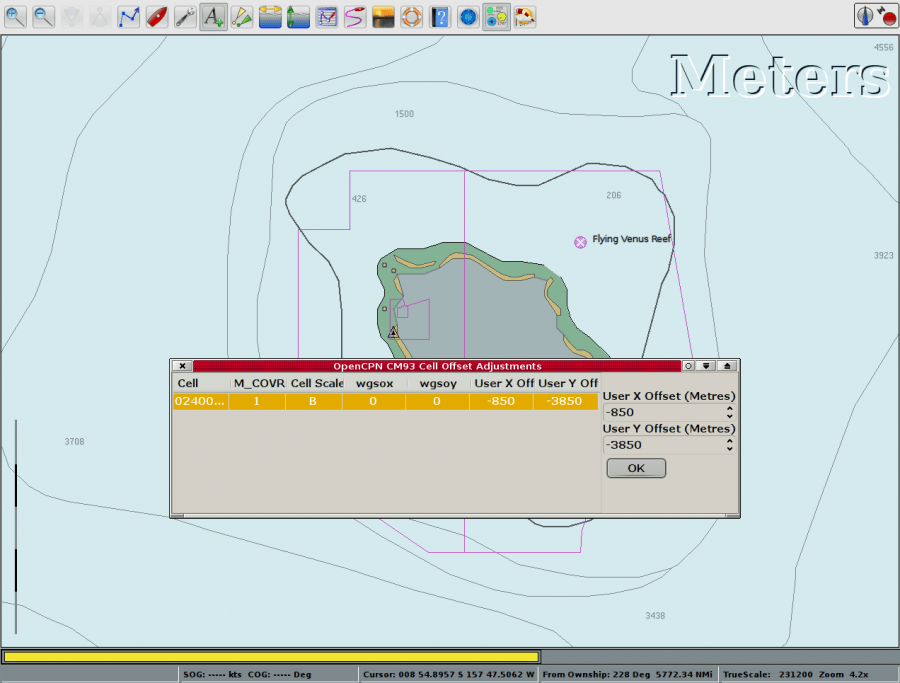

There is absolutely no guarantee that a correction, based on one point, as described below, will be valid for the whole chart cell. Be very careful when using this feature.
Starting with offsets.


Some cells have built in corrections already applied. The values wgsox and wgsoy, are offsets to bring the original chart cell to WGS84. See the first and third cell in the picture above. The values are for information only, and cannot be changed. These corrections are generally correct, but not always. Sometimes the corrections are wrong and sometimes there are no corrections where there ought to be. This is where this manual offset feature comes in handy.
In order to use this feature effectively, one needs a geographically known reference point. As an example, say there is a NAVAID present on the chart cell with known WGS84 lat & long, as from a light list. In this case, one can drop a waypoint on the chart, edit the waypoint properties to the known lat/lon, and then use the CM93 Offset Dialog to slew the cell/MCOVR so that the dropped waypoint coincides with the NAVAID feature on the cm93 cell (chart).
You may also use a geographical feature such as a Cape or point whose location is absolutely known, as by reference to observation, or by rendering on another, more accurate chart such as a trusted scanned raster chart or georeferenced photo chart.
To see how this feature works, here is an example from the South Pacific.

This is Tongareva, also called Penhryn atoll. A mark, with a triangle is dropped at the westernmost point of the Island.

Zooming out to next smaller scale chart makes the triangle mark jump NNE. Time for some corrections, as we, at least for the purpose of this example, are confident that the larger scale chart is correct.

Quite large corrections brings the chart into reasonable agreement.